Eindrücke

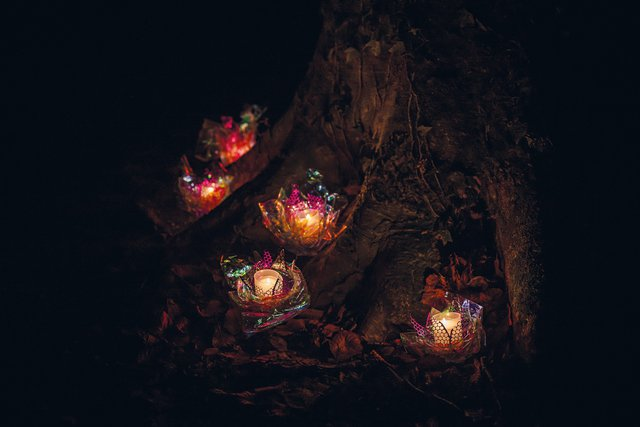
2025 (Rohrer Schachen)

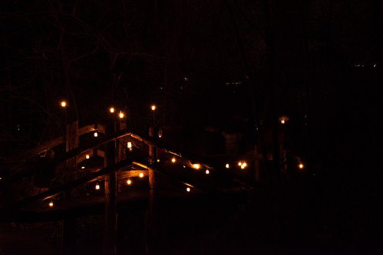
2024 (Telliwald Aarau)

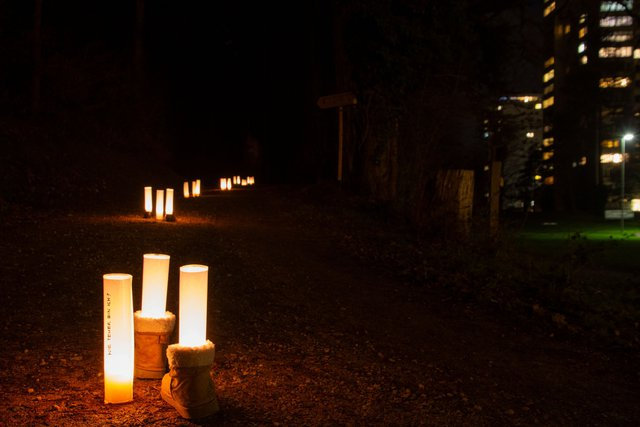
2023 (Gönhardwald Aarau)

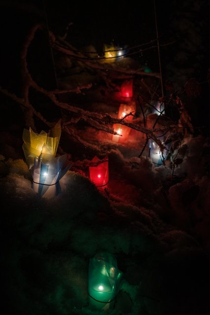
2022 (Echolinde Aarau)

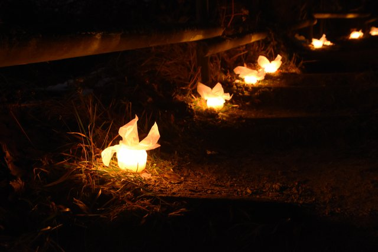
2021 (Alpenzeiger Aarau)

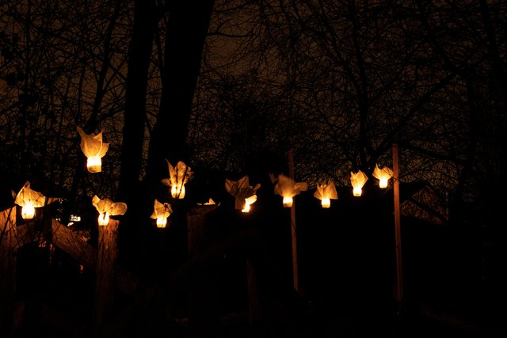
2019 (Telliwald Aarau)

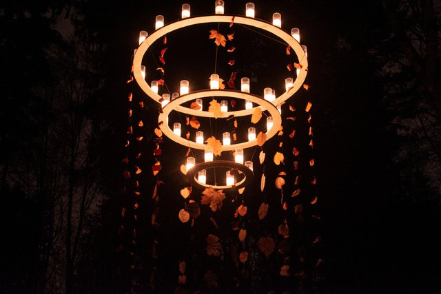
2018 (Distelberg Aarau/Unterentfelden)

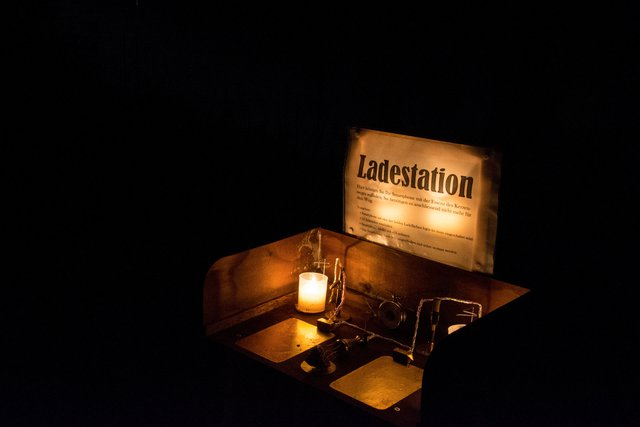
2017 (Auenwald im Grien Erlinsbach)

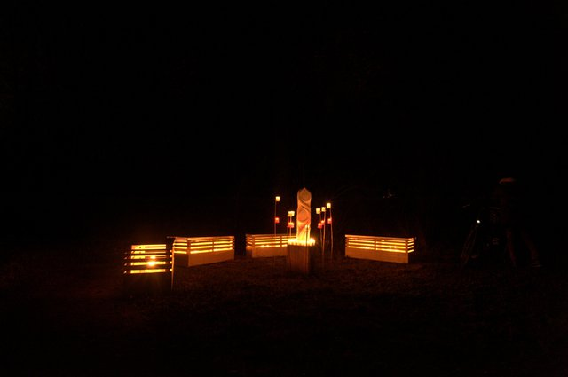
2016 (Rohrer Schachen)

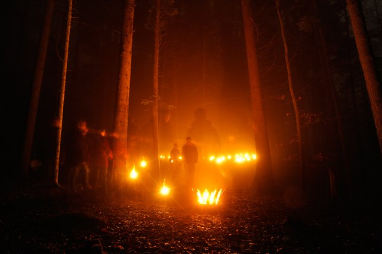
2015 (Echolinde Aarau)

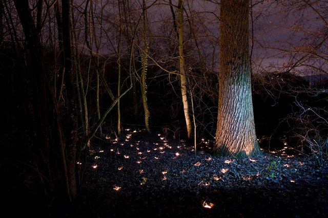
2014 (Entennest Schönenwerd)

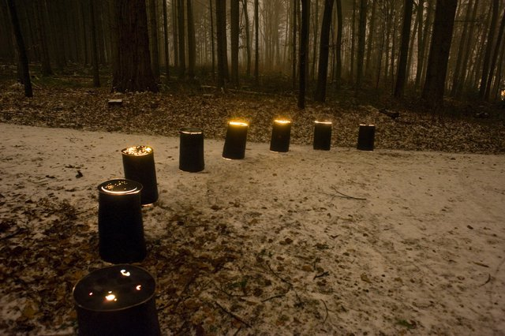
2013 (Alpenzeiger Aarau)

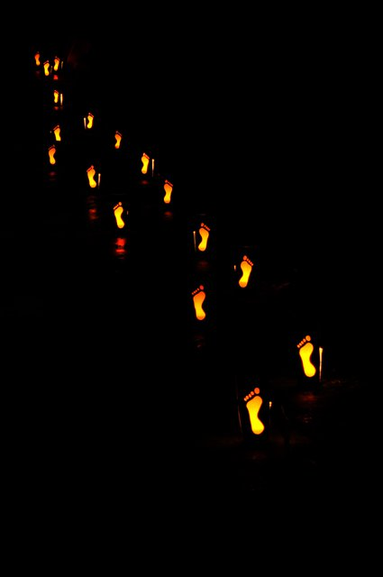
2011 (Friedhof Aarau)
Ein Klick auf ein Jahresbild öffnet die Galerie. Mit den Pfeiltasten kannst du blättern, mit Escape schliessen.